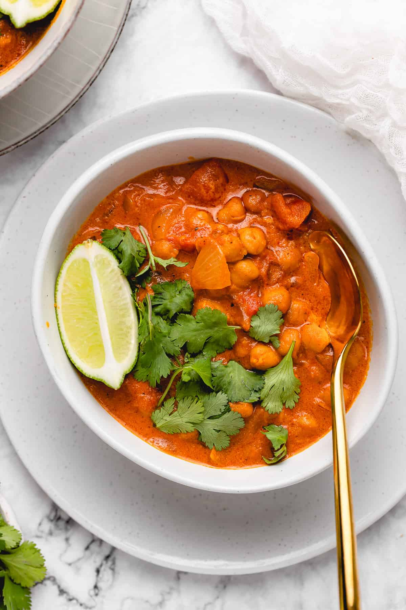

Coconut Chickpea Curry

Description
All made in one pot, this easy vegan curry is incredibly flavorful, perfect for meal prep, budget-friendly, and a perfect weeknight dinner!
Ingredients
- 2 tablespoons coconut oil
- 1 medium red or yellow onion, diced
- 400g fresh or canned tomatoes, diced
- 454g canned chickpeas, drained and rinsed
- 3 garlic cloves, minced
- 1 1/2 tablespoons of garam masala
- 1 teaspoon curry powder
- 1/4 teaspoon cumin
- 383g coconut milk
- 2 teaspoons coconut flour (optional)
- 1 small lime
- Salt and pepper, to taste
Steps
- In a deep pot over medium-high heat, add the coconut oil.
- Add in the onions and tomatoes. Grind some sea salt and ground black pepper over the mixture and stir together. Lower heat to medium and allow to cook down until juices of the tomatoes are naturally released and onions are soft, about 10 minutes.
- Add in the chickpeas, garlic, garam masala, curry powder and cumin. Stir to combine.
- Add in the coconut milk and stir again. Add in the coconut flour which helps to slightly thicken the curry. Bring the curry to a boil, and then reduce to medium-low so that the mixture continues to simmer for 10 to 12 more minutes.
- Taste the curry and season with salt and pepper if you desire. Remove the curry from the heat and squeeze a lime lightly over the top of the curry, stirring to combine.